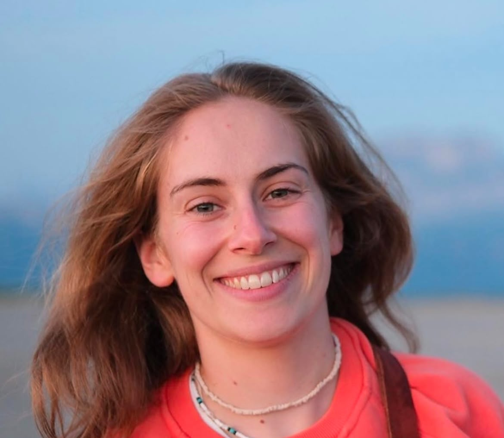

Cabinet : Alpes Kiné Mouv' — 40 Rue de la Grenette, 74370 Epagny Metz-Tessy
Équipements : Consultations en salle individuelle et réathlétisation sur plateau technique hautement équipé.
À apporter lors du 1er RDV : Votre ordonnance médicale, votre carte Vitale, vos examens d'imagerie récents (radiographies, IRM) et une tenue confortable adaptée à l'exercice physique.